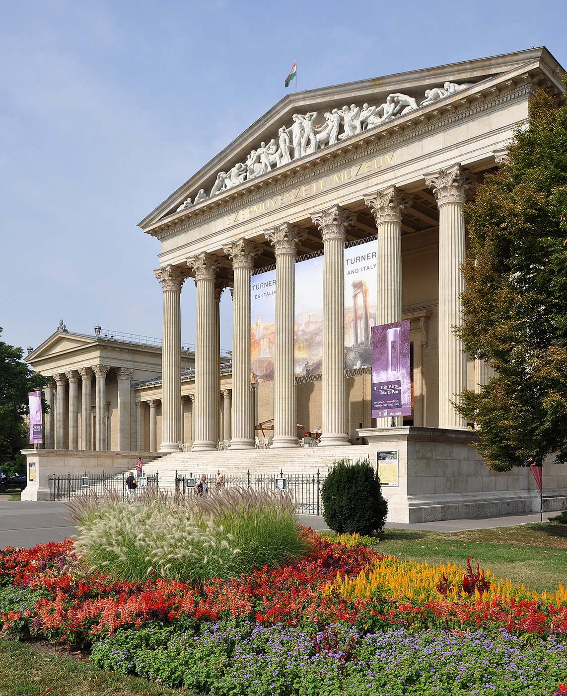
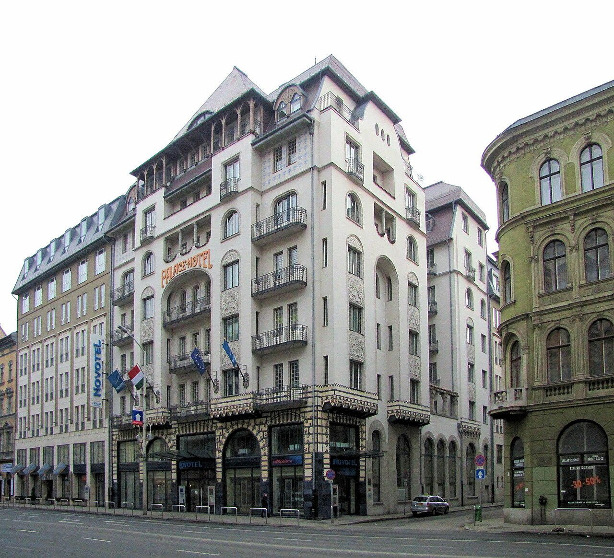

Исторические и справочные гербы


Budapest
Путеводитель. Объектов в этом выпуске: 36.
OTIUM — практика нарочитого досуга. В античном смысле otium — не побег от работы, а время, когда внимание возвращается к памяти, пейзажу и мысли — без прикладного дедлайна.
Мы выстраиваем маршруты для неспешного присутствия, а не для чек-листа достопримечательностей: важно быть в месте, а не «потреблять» виды.
OTIUM — не туроператор. Это приглашение пройтись, остановиться и оставить маршрут незавершённым, если свет на фасаде заслуживает ещё минуты.
Исторические и справочные гербы
Путеводитель. Объектов в этом выпуске: 36.
Будапешт — столица Венгрии, образованный слиянием Буды, Пешта и Обуды в конце XIX века.
Римские корни, средневековая крепость на холме, эпоха Османской империи и расцвет Австро-Венгрии оставили мосты, купальни Сечени и парламент на Дунае. Город — центр музыки, архитектуры модерна и термальной культуры.
Первая мировая война и Трианон изменили роль Венгрии; Вторая мировая и 1956 год оставили след в памяти города. После 1990 года Будапешт открылся Европе, развил туризм и сохранил купальни, мосты и музыкальные традиции как общее достояние.
Al-Huda Mosque Manila.JPG

Andrássy út

Grand boulevard lined with mansions, embassies, Opera, and House of Terror museum—UNESCO buffer around the Millennium Metro below.
Laid out from 1872 as a representative axis for the growing capital.
Defines Pest’s elegant 19th-century urban fabric.
Aquincum Múzeum

Аквинфум (лат. Aquincum) был древнеримским военным лагерем и административным центром, основанным около года 1-го до н.э. на территории современной Будапешта. Это место служило важным форпостом Римской империи на северо-восточных рубежах, защищавшим её от варварских племен. Сегодня здесь расположен музей Аквинукум, где посетители могут увидеть археологические находки, демонстрирующие повседневную жизнь римлян, включая предметы быта, оружие и монеты.
Музей Аквинукум позволяет заглянуть в прошлое венгерской столицы и узнать больше о роли Рима в истории региона.
Budavári Palota

Royal palace complex housing the Hungarian National Gallery, the Budapest History Museum, and National Széchényi Library.
Royal seat from the 13th century onward; repeatedly destroyed and rebuilt—today’s shell largely mid–20th century.
UNESCO-listed Buda Castle Quarter core with ramparts, churches, and cobbled streets.
Sikló

Будапештский фуникулёр Буда-Келети был построен в 1870-х годах и соединяет Королевский замок Буды с нижней частью города Келети. Это один из старейших действующих фуникулёров Европы, сохранившийся до наших дней.
Фуникулёр является важной городской достопримечательностью Будапешта и популярным средством передвижения между двумя частями города.
Budapest Fine Arts Museum R01.jpg

Citadella (Gellért-hegy)

Крепость Цитаделла Будапешта была построена в середине XIX века по указу императора Франца Иосифа I Австрийской империи. Вдохновением послужили французские фортификационные сооружения эпохи Наполеона III. Здание служило важным оборонительным пунктом города, защищая Королевство Венгрию от внешних угроз.
Цитадель является одним из главных символов Будапешта и популярным местом для прогулок туристов и горожан благодаря живописной архитектуре и панорамным видам на Дунай и Пешт.
Dohány utcai zsinagóga

Moorish Revival synagogue—largest in Europe by seating—with museum and cemetery garden in the block.
Built 1854–1859; the ghetto wall during the siege of Budapest ran partly through the complex.
Centre of Neolog Judaism in Hungary and a key site on Jewish heritage walks.
Halászbástya

Fairytale terraces and turrets above the Danube with views toward Parliament—built as a lookout, not a fortress.
Completed around 1902 to designs by Frigyes Schulek near Matthias Church; partly fee-charging for upper terraces.
Romantic panorama point and wedding-photo favourite above the river bend.
Gresham-palota

Отель Four Seasons Gresham Palace расположен в самом центре Будапешта, на улице Андрашш Имре, рядом с Парламентом Венгрии и набережной Дуная. Построенный в 1911 году, отель изначально назывался Grand Hotel Royal, позже был переименован в Gresham Palace. В течение своей истории здание служило резиденцией иностранных дипломатов, королевских особ и известных личностей. Сегодня это один из самых престижных отелей города, сочетающий роскошь прошлого с современными удобствами.
Здание привлекает внимание туристов своей уникальной архитектурой и историческим значением, являясь символом элегантности и изысканности венгерской столицы.
Gellért-hegy

Limestone hill above the Danube: Citadel, Liberty Statue, and lookout paths over bridges and rooftops.
Fortifications from the 19th century; the giant female Liberty figure dates to Soviet-era commemoration, reinterpreted today.
Classic sunset viewpoint and a geological backdrop to the Gellért Baths below.
Nagyvásárcsarnok

Iron-framed hall with a colourful Zsolnay roof: paprika, lángos, and souvenirs on the ground, more food upstairs.
Opened in 1897; designed by Samu Pecz as a modern wholesale market near the river and tram termini.
Working market and tourist ritual in one noisy, fragrant building.
Hősök tere

Monumental square with the Millennium Memorial, colonnades of historic figures, and two major art museums on either side.
Laid out for Hungary’s 1896 millennium celebrations; later adapted as a site for mass gatherings and national holidays.
Hungarian history in stone—mythic chieftains, kings, and independence themes in one vista.
Terror Háza

Дом террора расположен в центре Будапешта и был построен в 1947 году как главное здание Министерства внутренних дел Венгрии. В годы Второй мировой войны здесь размещались нацистские оккупационные власти и венгерская полиция безопасности. После войны дом использовался коммунистическими властями страны как штаб-квартира тайной полиции. В музее представлены экспонаты, рассказывающие о трагической истории Венгрии XX века, включая массовые репрессии, геноцид евреев и политические преследования.
Музей позволяет посетителям лучше понять сложную историю Венгрии и осознать ужасы тоталитаризма.
Magyar Nemzeti Múzeum

Музей основан в 1802 году как первый публичный музей Венгрии, отражающий историю страны и её культуры. В XIX веке здание музея было реконструировано архитектором Имре Штейндль в стиле неоготики, став одним из символов Будапешта.
Это один из старейших музеев Венгрии, где представлены уникальные коллекции артефактов, живописи, скульптуры и археологических находок, рассказывающих о развитии венгерской цивилизации.
Országház

Neo-Gothic riverside parliament with a tall central dome and long symmetrical wings—Hungary’s largest building and a postcard symbol of Budapest.
Built from the late 19th century after the 1867 Compromise; designed by Imre Steindl. Heavily damaged in World War II and restored in stages.
Seat of the National Assembly and a national emblem of Hungarian statehood.
Magyar Állami Operaház

Renaissance Revival opera house with rich auditorium gilding—home to opera and ballet after a major recent restoration.
Opened in 1884 to Miklós Ybl’s design; acoustics were praised from the first season.
One of Europe’s great lyric theatres and a UNESCO-listed stretch of Andrássy Avenue.
Komor jakab palace szálló.jpg

Kopaszi-gát

Крепостной холм Копасзи-гат расположен в северной части Будапешта, изначально использовался как оборонительная крепость во времена османского правления. В XVII веке после освобождения от турок здесь была построена мощная фортификационная система, включавшая крепостные стены и башни. Сегодняшний вид Копасзи-гат отражает реконструкцию XIX века.
Это место интересно туристам благодаря живописной панораме города и сохранившимся историческим укреплениям.
Szabadság híd

Green Art Nouveau truss bridge with a central pedestrian strip—popular at sunset and during summer festivals.
Opened in 1896 as Franz Joseph Bridge; renamed after 1945. Trams share the deck with walkers.
Visual neighbour to the Great Market Hall and Gellért Hotel.
Margitsziget

Green kilometre-long island: promenades, ruins, a small zoo, pools, and summer musical fountain shows.
Monasteries once stood here; today it is a public park with sports facilities and spas.
Local lung between Buda and Pest—runners, families, and festival crowds share the paths.
Mátyás-templom

Colourful tiled roof and mixed Gothic lines: coronations and royal weddings once took place under its vaults.
Core from the 13th–15th centuries with later Baroque and 19th-century Neo-Gothic restoration by Frigyes Schulek.
Buda’s main church for centuries and a visual anchor next to the Fisherman’s Bastion.
Matthias Church, Budapest 2.jpg

Iparművészeti Múzeum

Музей прикладного искусства был основан в Будапеште в 1872 году и является одним из старейших художественных музеев Венгрии. Изначально здание предназначалось для проведения Венской выставки декоративного искусства, после которой музей разместился здесь постоянно. Здание выполнено в стиле венского историзма, сочетающего элементы ренессанса, барокко и классицизма, и стало символом венгерской культуры и искусства.
Здание музея само по себе представляет ценность как архитектурное наследие, а коллекция включает произведения декоративного искусства, живописи, графики и скульптуры, отражающие развитие европейского искусства от Средневековья до начала XX века.
Szépművészeti Múzeum

Neoclassical temple of art facing the Hall of Art—Old Masters, Egyptian antiquities, and a strong Spanish collection.
Opened in 1906; long renovation cycles refreshed galleries and climate systems.
Hungary’s premier encyclopaedic fine arts museum.
New York Kávéház

Gilded coffee palace—paintings, stucco, and chandeliers in a revived fin-de-siècle interior.
Opened in 1894; fell into decay under communism, then lavishly restored as a hotel café.
Tourist-priced but unmatched for Belle Époque atmosphere.
Rudas gyógyfürdő

Ottoman-era dome and octagonal pool under pencil columns, plus newer rooftop tubs with Danube views.
Turkish bath from the 16th century, expanded across centuries; gendered days still apply in some thermal areas.
Direct experience of Budapest’s Turkish layer beneath the modern spa industry.
Cipők a Duna-parton

Sixty pairs of cast iron shoes recall Jews shot into the river by Arrow Cross militia in 1944–45.
Created by Gyula Pauer and Can Togay (2005) as a quiet riverside memorial.
One of Budapest’s most moving Holocaust sites—flowers and candles appear daily.
Szent István-bazilika

Neoclassical basilica with a climbable dome; houses the reliquary of St. Stephen, Hungary’s first king.
Construction spanned the 19th century after an earlier church collapse; dome completed with engineering lessons from the saga.
Co-cathedral of Esztergom–Budapest and a major venue for state and liturgical events.
Újpest

Сент-Иштван-парк был заложен в конце XIX века по проекту архитектора Йожефа Хеллера и назван в честь короля Иштвана I Святого, который объединил разрозненные племена венгров и основал венгерское государство. Парк стал популярным местом отдыха горожан благодаря живописной аллее лип, пруду с золотыми рыбками и романтичным уголкам для прогулок.
Парк является одной из главных зелёных зон Будапешта и любимым местом отдыха жителей и туристов города.
Kazinczy utca

Szimpla Kert — бывший винный завод в Будапеште, переоборудованный в популярное общественное пространство и культурный центр. Изначально построенный в начале XX века, он долгое время использовался для хранения вина и производства напитков. В конце 90-х годов здание было заброшено и постепенно пришло в упадок, пока в начале 2000-х энтузиасты не превратили его в уютную пивную и ресторанную зону с атмосферной уличной едой и живой музыкой.
Место стало культовым среди местных жителей и туристов благодаря своей уникальной атмосфере и разнообразию мероприятий.
Széchenyi lánchíd

The first permanent bridge linking Buda and Pest, with stone towers and suspension chains—still a main pedestrian and tram crossing.
Opened in 1849; named after Count István Széchenyi. Rebuilt after World War II using original design principles.
Urban link that literally unified the two cities long before their official merger.
Széchenyi gyógyfürdő

Yellow Neo-Baroque bath complex with outdoor pools steamy in winter—social Budapest at its most relaxed.
Opened in 1913; water is supplied from the Széchenyi thermal spring system under the park.
One of Europe’s largest spa complexes and a symbol of Budapest’s bath culture.
Tabán a szem utcából.jpg

The House of Houdini.jpg

Vajdahunyad vára

Romantic composite castle copying Transylvanian and Romanesque motifs—originally temporary for 1896, rebuilt in stone.
Designed by Ignác Alpár as a millennium exhibition pavilion; today it houses the Hungarian Agricultural Museum.
Fairytale silhouette on the boating lake minutes from Széchenyi Bath.